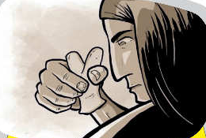

Se dicen muchas cosas sobre mí…
Others speak of the power my sharp vertebrae have, saying that if warriors use them to make cuts on different parts of their bodies, they instill them with strength and courage.
Others speak of the power my sharp vertebrae have, saying that if warriors use them to make cuts on different parts of their bodies, they instill them with strength and courage.